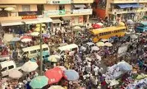
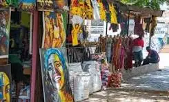
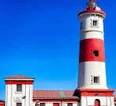
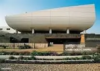

Discover Accra
History
Accra is one of the oldest and most vibrant cities in West Africa. From its colonial roots to becoming the capital of Ghana, the city embodies cultural richness and economic resilience.
Demographics
- Population: 2.5 million+
- Languages: English, Ga, Twi, Ewe
- Main Religions: Christianity, Islam, Traditional
- Major Industries: Trade, Services, Tourism, Real Estate
Community Events
Accra hosts vibrant events like the Homowo Festival, Chale Wote Street Art Festival, and traditional durbars, showcasing creativity, history, and cultural pride.
City Gallery




Your Visit
You have visited this page 0 time(s).